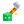
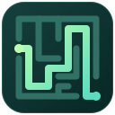

Library
Commons
A shared toolkit for Java applications and Minecraft plugins. Work with strings, numbers, collections, files, item builders, serialization, and scoreboard utilities.
Classes, methods, and everything in between. Explore the APIs behind my Java libraries, frameworks, and Minecraft plugins.
Explore the projectsimport dev.despical.commons .number.NumberUtils;// Check whether a string is an integer.boolean valid = NumberUtils .isInteger("42");11 projects
A shared toolkit for Java applications and Minecraft plugins. Work with strings, numbers, collections, files, item builders, serialization, and scoreboard utilities.
Define commands directly in Java with annotations. Handle aliases, permissions, subcommands, tab completion, cooldowns, and custom arguments without registering commands in plugin.yml.
Build Minecraft inventory interfaces from reusable panes or XML layouts. Combine positioned items, paginated menus, interactive components, and click handlers in one GUI.
Load configurable Minecraft items from YAML files. Customize names, lore, amounts, glowing effects, durability, item flags, and your own keys through a lightweight Java API.
Render customizable text with Minecraft particles. Adjust fonts, scale, rotation, and placement, with cached rendering, viewer distance limits, and PlaceholderAPI support.
A survival minigame played across floors of disappearing blocks. Integrate with arena management, game lifecycle events, player statistics, records, and spectator systems.

PluginA single-player whack-a-block minigame with timed rounds, scoring, and hit streaks. Extend arena behavior and listen for game, player, and statistic events through its public API.
A competitive minigame about reaching the top and holding the crown. Work with configurable arenas, king changes, player statistics, per-arena records, and leaderboard integrations.

PluginCreate persistent, deterministic Minecraft mazes with themed presets, private previews, and route guides. Integrate with maze management, operation progress, terrain snapshots, and lifecycle events through its public API.
A self-hosted Java worker that checks SpigotMC buyer lists and sends new-sale notifications to Discord. Includes configurable scans, purchase filtering, and persistent buyer tracking.
A self-hosted Discord music bot built with JDA and LavaPlayer. Explore slash-command playback, YouTube and Spotify resolution, queue controls, replay history, and persistent guild settings.
Try another name or choose a different category.
Setup guides and configuration examples live in the documentation.